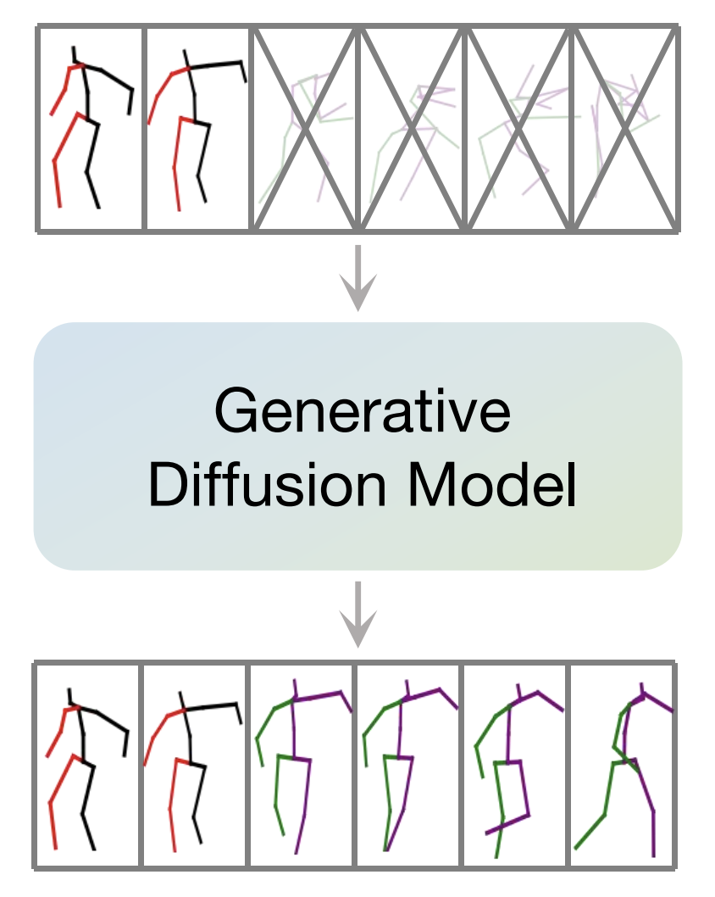
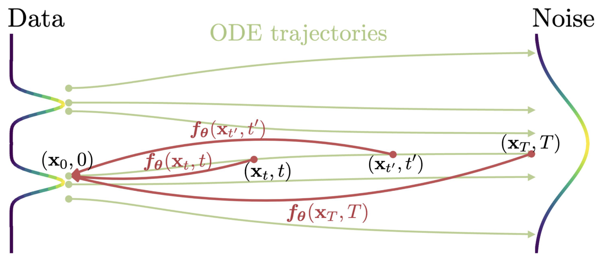
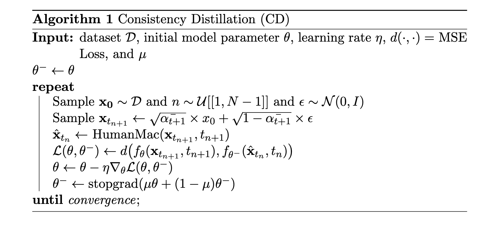

Human Motion Prediction based on Consistency Distillation
CuiEM
👍️ HuamnMAC
HuamnMAC 是一个基于 DDIM 逐步去噪生成动作序列的条件预测/生成模型。它的输入是25帧的历史数据加上100帧的随机噪声（总共长度为125帧的数据），输出是25帧的历史数据加上100帧的预测数据。在进入 Diffusion 之前与之后都会有个矩阵变换进行降维与升维处理。

🙌 Consistency Distillation

一致性模型的蒸馏是在预训练好的 Diffusion 基础上进行训练。其中的 $$f_{\theta}(\mathbf{x},t)=c_{\mathrm{skip}}(t)\mathbf{x}+c_{\mathrm{out}}(t)F_{\boldsymbol{\theta}}(\mathbf{x},t)$$ 而 F 是需要训练出来的神经网络。
🥲 训练过程
先将 样本(x_0) 随机加噪到某个时间步（比如457，属于[1,999]）之间得到 x_(t+1) ，然后利用HumanMAC前向去噪一步到前一个时间步（比如456）得到 x_(t)，再计算并最小化 f(x_(t+1), t+1) 和 f(x_(t), t) 的距离，即：
$$
min \quad MSE(f_\theta(\mathbf{x}_{t_{n+1}}, t_{n+1}), f_{\theta^-}(\hat{\mathbf{x}}_{t_n}, t_n)\big)
$$

但是实际上这样的训练效果并不好，所以在原优化目标的基础上再增加一项 Loss 即和训练时加噪前的的样本的距离，即：
$$
min \quad MSE(f_\theta(\mathbf{x}_{t_{n+1}}, t_{n+1}), f_{\theta^-}(\hat{\mathbf{x}}_{t_n}, t_n)\big) + MSE(f_\theta(\mathbf{x}_{t_{n+1}}, t_{n+1}), x_0)
$$
🤣 Results
🤣